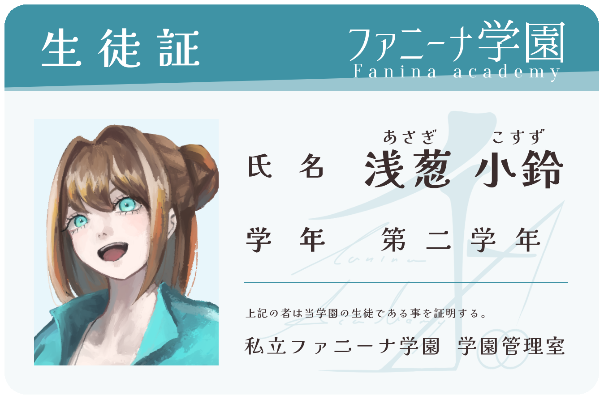
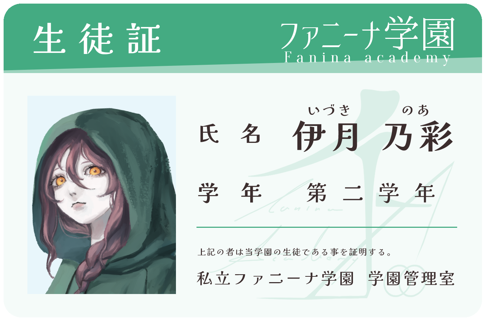
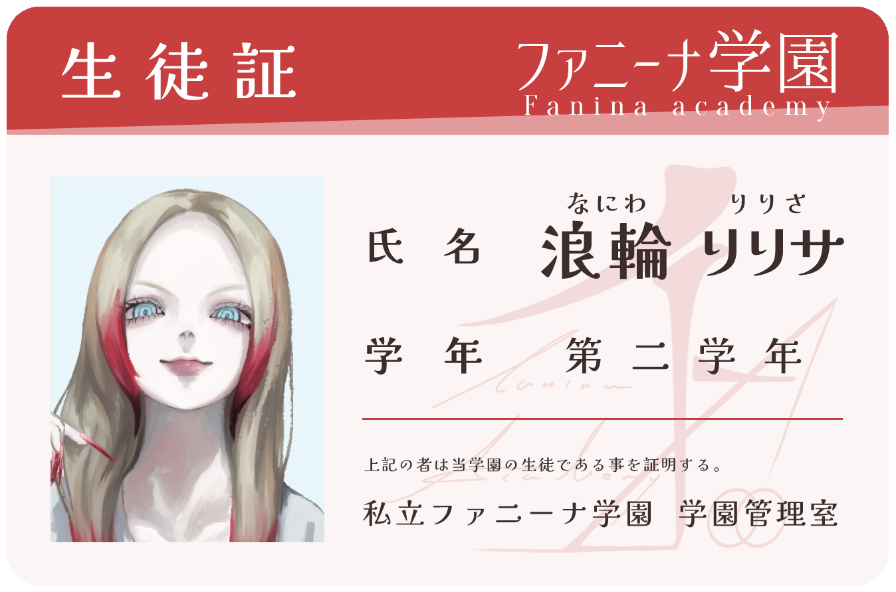
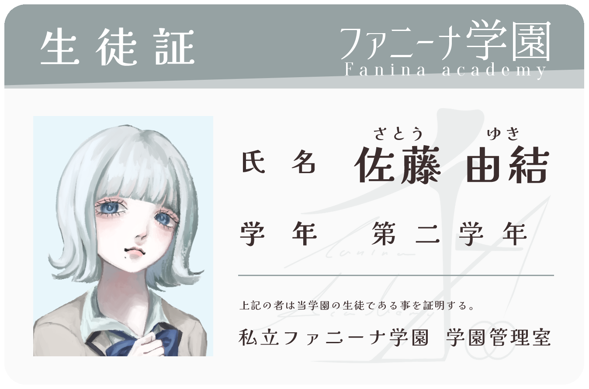
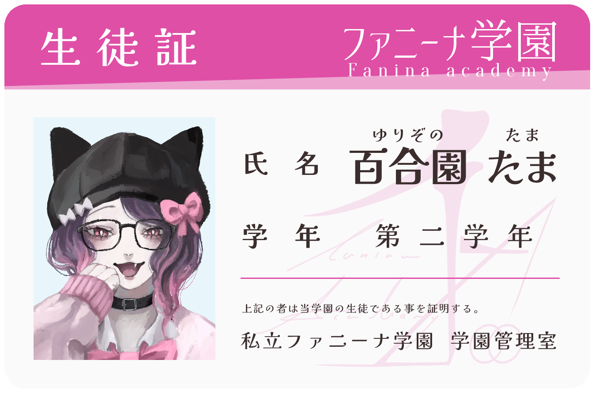
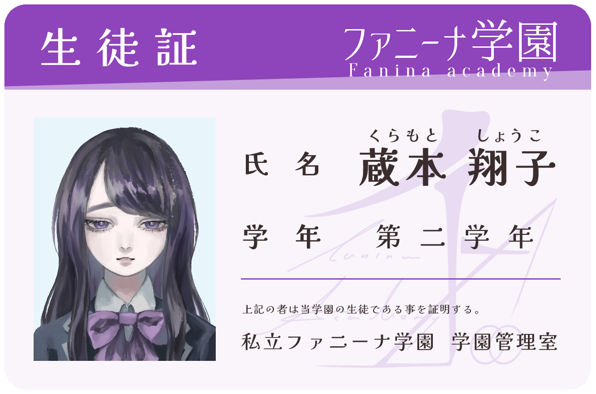

STORY
この世界のどこかに、自由を謳う素晴らしい学園がありました
そこでは七不思議なるものが、まことしやかに囁かれていたのです
この世界のどこかに、自由を謳う素晴らしい学園がありました
そこでは七不思議なるものが、まことしやかに囁かれていたのです

陸上部のエースであり、部長代理を任されている元気な少女。
誰かのために動くことが好きな
ヒーロー的存在。
意外にもおもしろおかしい事が
好きなんだとか。

ゲームが大好きな不登校少女。
学園に姿を見せることはなく、
ゲームセンターに出入りする様子だけが確認されている。
噂によると、とあるゲームの
超上級者らしい。

派手な髪色がトレードマークの、
いわゆるギャル的な少女。
テンションで生きているが、
ダンスの実力は本物。
ぬるい空気に耐えられず、
部活動を辞めた過去がある。

吹奏楽部に所属している、
消え入りそうな声の少女。
引っ込み思案で演奏にも自信を
持てていないが、その実力は確か。
実は、無茶ぶりに付き合う
くらいにはノリがいい。

自認ネコ、語尾に「にゃ」を付ける
不思議な少女。
出席している唯一の美術部員で、
絵を描く事が趣味であり将来の夢。
家ではまともにしているらしい。

学年一位を誇る、
真面目で努力家な少女。
規則に対する厳しさも相まって、
学園では噂になっている。
図書委員に所属していて、
本の知識も豊富。